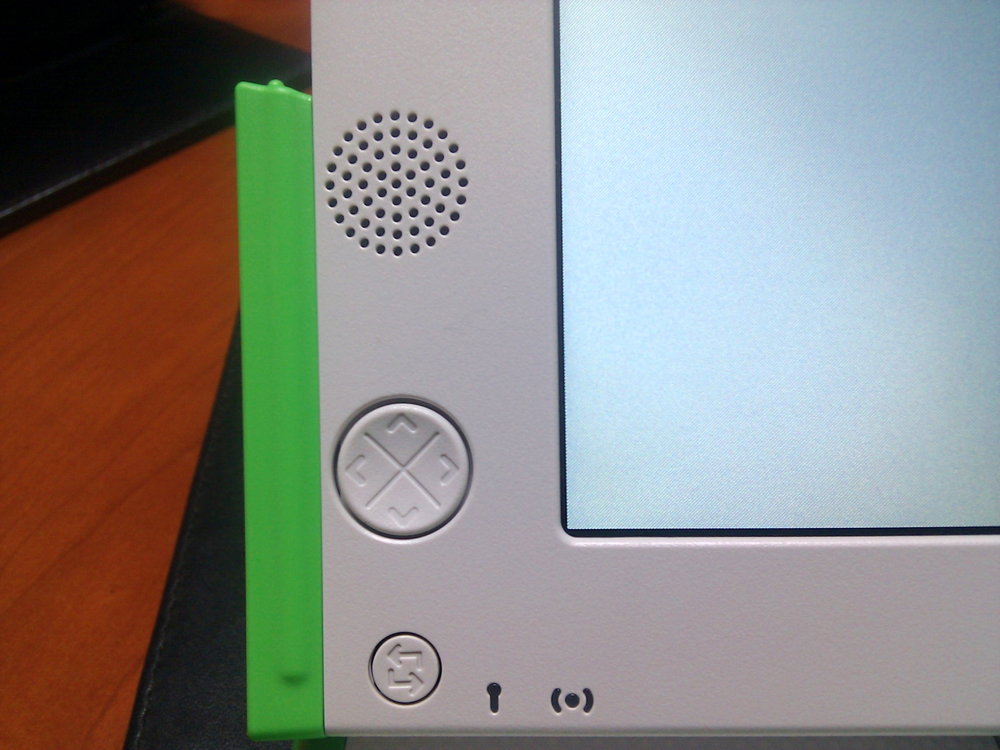
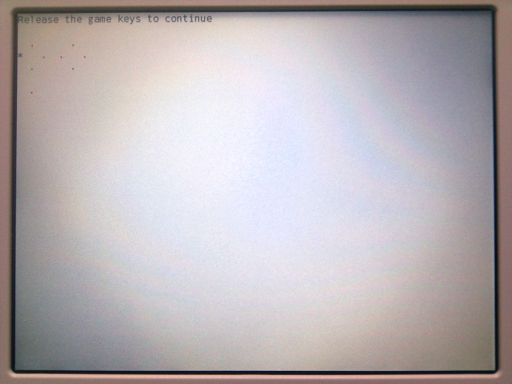
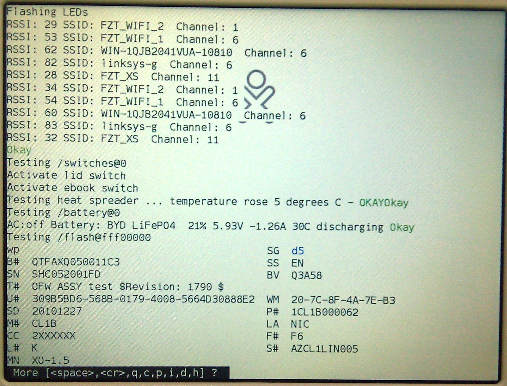

Anterior
Siguiente
Capítulo 2. Test XO
En este capitulo vamos a aprender a realizar el
Test Básico de las XO
, y a conocer cada una de las partes que componen este Test.
Para iniciar el Test de la XO realizaos el siguiente procedimiento:
Encender la XO presionando el botón de juego izquierdo
Esperar que nos salga el mensaje
Release the game keys to continue

Figura 2.1. Tecla de Juego Izquierda

Figura 2.2. Mensaje de la XO

Figura 2.3. El Test de la XO
Anterior
Capítulo 1. Introducción
Subir
Inicio
Siguiente
Capítulo 3. Formatear XO